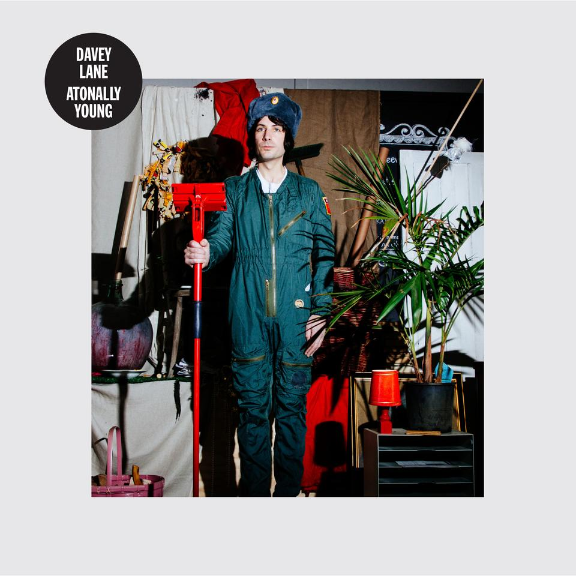

|  |
Davey Lane Atonally Young Field Recordings/MGM 3 October 2014 Review by Luke Stefanac |
After taking a look at Davey Lane’s track record, you can see that he’s quite the swiss army knife: a member of You Am I, The Pictures, The Wrights, and even a touring buddy for Barnsey. However, the self professed freakazoid has proven that he can stand on his own two feet with his debut album ‘Atonally Young’. This aptly titled record is an eclectic adventure that sees Lane venturing into new psychedelic territory, while gently (or more accurately, raucously) reminding us of his own roots. Blowing the door open to this sonic adventure is Komarov, which tells the story of a cosmonaut who goes by the same name. Built on top of thumping bass and bouncing drums, the allusion of space is cleverly crafted with the combination of the fuzzed out guitar and swirling synths, lending itself to the dark and despairing atmosphere that Lane is retelling. Framed around one of this year’s best riffs, Komarov is a huge song that might be able to hurdle you straight to space itself. On the other side of the sonic spectrum is Not An Option Now, a song that utilises a spacious atmosphere reminiscent of The Zombies in order to steer you towards gentler waters. The calmness of the track is crafted by a skillfull use sparsity by the band, giving it room to breathe and eventually grow. Adding to this airy atmosphere are the delicate melodies that decorate the song - intricate earworms reflecting Lane’s exploration into the psychedelic, and his knack for creating landscapes that slowly pull you in. And reminding us of his tendency to let loose is the blistering Smash Yer Head In, a track that is unabashedly rock and roll. Devoid of all restraint, this all out aural assault features thundering drums and pummelling guitars that, well, smash yer head in! Jokes aside, this song doesn’t stop to give you a break, and instead delivers a bratty, defiant anthem that has a chorus that should be screamed along to. If this is armageddon, I think I’d be able to get really comfortable. These songs are only the tip of the iceberg, as this debut record is brimming with refined songwriting that makes you wonder why Davey Lane isn’t a household name (yet). This album is one of the finest journeys of the year - even I’m starting to feel atonally young. Originally written for City And Sound. |